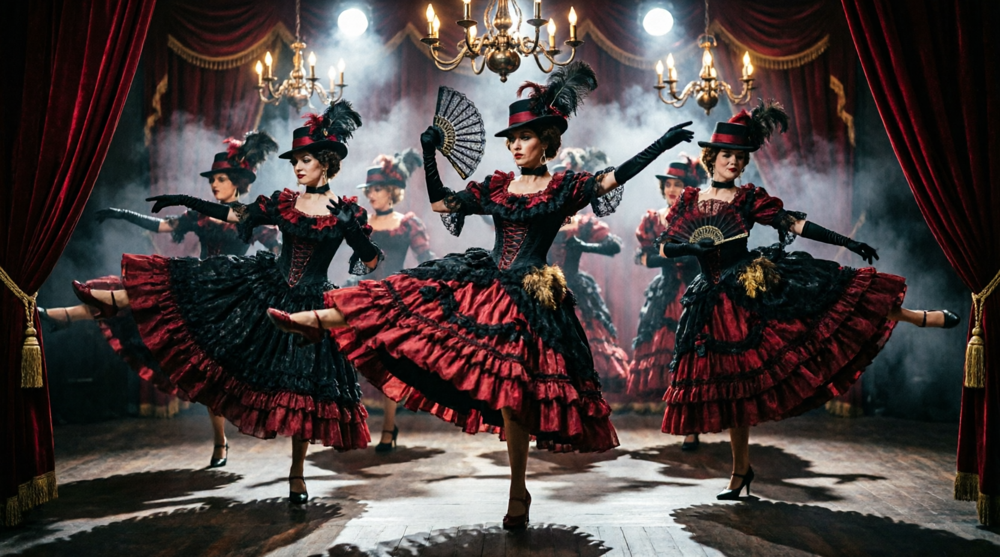

Посыл
Здесь время замирает, а реальность остаётся за порогом...

Cabaret Black Hole — это больше, чем просто место для спектаклей. Это живое пространство, созданное для тех, кто ищет нечто большее, чем просто развлечение.
Мы верим, что искусство рождается во встрече. Встрече разных миров, идей, темпераментов. Здесь за одним столом могут оказаться признанные мастера сцены и те, кто только делает первые шаги в творчестве. И это прекрасно.
Наша миссия — создать атмосферу тепла и принятия, где каждый гость чувствует себя частью чего-то большего.
Что происходит в нашем кабаре?
Всё, что выходит за рамки обыденности:
Антрепризы — камерные спектакли, где каждый зритель становится соучастником действа, а не просто наблюдателем.
Лаборатории — творческие эксперименты, где рождаются новые формы, идеи и смыслы. Здесь нет правильных ответов — только поиск и свобода самовыражения.
Обмен идеями — дискуссии, перформансы, импровизации. Мы открываем двери для всех, у кого есть что сказать миру.
Cabaret Black Hole — это место, где можно оставить за порогом суету, стереотипы и страхи. Где можно позволить себе быть собой. Где искусство перестает быть чем-то далеким и недосягаемым — оно становится частью тебя.
Добро пожаловать в наше кабаре.
Здесь каждый найдет что-то свое.